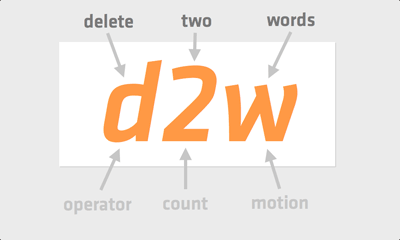
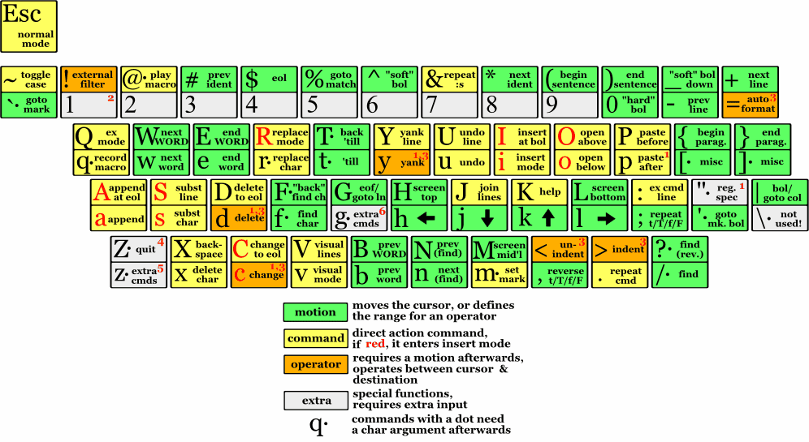

Cult of Vi(m)
- Precision: Text surgery
- Efficiency: Minimize keystrokes and movement
- Modal: Commands are mode-sensitive
- Usable over a 300 baud-modem
Bill Joy
Bill Joy
Church of Emacs
- "Emacs has been scientifically proven to be the ultimate text editor, but it is also so much more than that." http://www.dina.kvl.dk/~abraham/religion/
Why use Emacs?
- The ultimate extensible editor
- Written in Lisp
- Discoverability
- Intuitive
St IGNUcius

Start Hacking on MacVim
- Homebrew:
$ brew install macvim - Precompiled: http://code.google.com/p/macvim
Make Vim Friendly
$ git clone git://github.com/carlhuda/janus.git ~/.vim
$ cd ~/.vim
$ rake
Getting Started With Emacs
- Instructions adapted from http://www.viget.com/extend/emacs-24-rails-development-environment-from-scratch-to-productive-in-5-minu/
Getting Started With Emacs
$ brew install emacs --cocoa --use-git-head --HEAD
$ mv /usr/local/Cellar/emacs/HEAD/Emacs.app /Applications/
$ mkdir ~/.emacs.d/
$ wget https://gist.github.com/873111 ~/.emacs.d/init.el
Vim is a Modal Editor
- Normal: Stealthily leap from line to line, over sentences, leaving no trace like a NINJA
- Insert: Type text. Boring.
- Visual: Select text with the precision of a surgeon
ROBOT-ASSISTED SURGEON
Ninja (Normal) Mode
- 
Ninja Motion
wmove to the next word: he[l]lo world=>hello [w]orldfofind charo: he[l]lo world=>hell[o] world
Ninja Motion
dwdelete to the next word: he[l]lo world=>he[w]orlddfodelete find charo: he[l]lo world=>he[ ]world
Ninja Motion
d2wdelete to the second word: he[l]lo world leaders=>he[l]eadersd2fodelete find charo: he[l]lo world=>he[r]ld
Ninja Text Objects
awa word: he[l]lo world=>[hello ]worldiwinner word: he[l]lo world=>[hello] world
Ninja Text Objects
cawchange a word: he[l]lo world=>|worldciwchange inner word: he[l]lo world=>| world
Ninja Text Objects
ca"change a quoted string: hello "[w]orld"=>hello|ci"change inner quoted string: hello "[w]orld"=>hello "|"
Ninja Text Objects
:h navigation:h text-objects
Vim Cheat Sheet

Emacs Basics
C= control (remap this to caps lock)M= meta (remap this to cmd or alt)C-h t= Control-h, followed by tC-h t= Tutorial
rails.vim by Tim Pope
- Syntax highlighting
:A(alternate: model=>unit test):R(related: model=>schema definition):Rgenerate controller Blog:Rmodel user:Rcontroller users:Rview users/show.html.erb- Smart:
:Rcon U<tab>
Ruby with Emacs
- ruby-mode (boring)
Rails with Emacs
- rinari (Rinari Is Not A Rails IDE)
- Not boring!
- http://rinari.rubyforge.org/
- Rails 3ified at https://github.com/crazycode/rinari
Rinari
C-c ; f c= rinari-find-controllerC-c ; f m= rinari-find-modelC-c ; f t= rinari-find-test- Etc.
Emacs Resources
- Steve Yegge, Effective Emacs http://sites.google.com/site/steveyegge2/effective-emacs
- Emacs-Fu, Useful tricks for Emacs http://emacs-fu.blogspot.com/